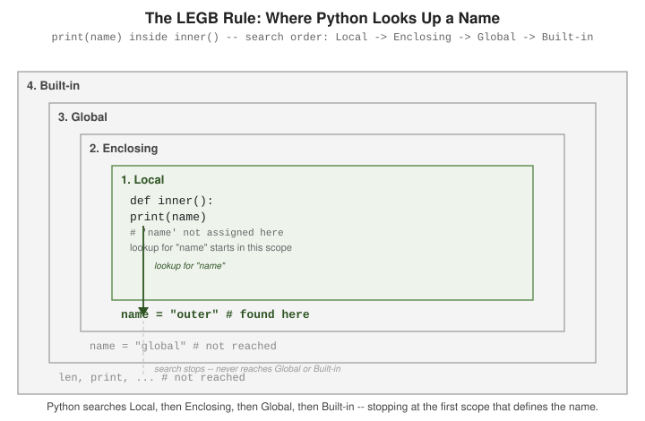

Functions
|
This content was generated with the assistance of AI and should be verified against the official documentation before being relied on in production. |
A function is defined with def, called by name, and may return a value with return — everything
else on this page (parameter styles, scope, lambda) builds on that one construct.
Defining Functions: def, Parameters, Return Values
A def statement binds a name to a function object; the body executes only when the function is
called. Without an explicit return, a function returns None. Full coverage is in the tutorial’s
Defining Functions section:
def greet(name):
return f"Hello, {name}!"
def log(message):
print(f"[LOG] {message}") # no 'return' -> implicitly returns None
print(greet("Ada")) # Hello, Ada!
result = log("started") # prints "[LOG] started"
print(result) # NoneDocstrings
A string literal as the first statement in a function body is its docstring, retrievable at runtime
via .__doc__ or help(). Convention and formatting are documented under
Documentation Strings:
def area(radius):
"""Return the area of a circle with the given radius."""
return 3.14159 * radius ** 2
print(area.__doc__) # Return the area of a circle with the given radius.
help(area) # prints the same docstring, formattedSee Docstrings for multi-line docstrings, style conventions (Google, NumPy, reST, Epytext), and tools that generate documentation sites from docstrings.
Function Annotations
An annotation attaches an expression — typically a type — to a parameter or return value, using :
after the parameter name and -> before the return type. Python does not enforce annotations at
runtime; they exist for readers and for tools such as type checkers. Details, including the
__annotations__ dict they populate, are under
Function Annotations:
def multiply(x: int, y: int) -> int:
return x * y
print(multiply(3, 4)) # 12
print(multiply.__annotations__) # {'x': <class 'int'>, 'y': <class 'int'>, 'return': <class 'int'>}Parameter Styles and Argument Passing
Python’s parameter model covers several ways to pass and unpack arguments; all are laid out together in More on Defining Functions.
Positional, keyword, and default arguments
A caller may pass arguments by position or, using name=value, by keyword; a parameter with = in its
definition becomes optional and reuses that value when the caller omits it. See
Keyword Arguments and
Default Argument Values:
def connect(host, port=5432, timeout=30):
return f"{host}:{port} (timeout={timeout}s)"
print(connect("db.example.com")) # db.example.com:5432 (timeout=30s)
print(connect("db.example.com", 5433)) # positional
print(connect("db.example.com", timeout=60)) # keyword, skips 'port'
print(connect(host="db.example.com", port=5433)) # both by keyword*args and **kwargs
A parameter prefixed with * collects any extra positional arguments into a tuple; one prefixed with
** collects extra keyword arguments into a dict. Documented under
Arbitrary Argument Lists:
def total(*args, **kwargs):
print(args) # tuple of positional extras
print(kwargs) # dict of keyword extras
return sum(args) + sum(kwargs.values())
print(total(1, 2, 3, bonus=10, tax=5))
# (1, 2, 3)
# {'bonus': 10, 'tax': 5}
# 21Positional-only (/) and keyword-only (*) markers
A bare / in the parameter list marks every parameter before it as positional-only; a bare * marks
every parameter after it as keyword-only. Both are covered in
Special Parameters, with the
individual sections
Positional-Only
Parameters and
Keyword-Only Arguments:
def resize(image, /, width, *, height):
return f"resizing {image} to {width}x{height}"
print(resize("photo.png", 800, height=600)) # image and width may be positional
# print(resize(image="photo.png", width=800, height=600)) # TypeError: 'image' is positional-only
# print(resize("photo.png", 800, 600)) # TypeError: 'height' is keyword-onlyUnpacking arguments at the call site
The mirror operation: * unpacks an iterable into positional arguments, and ** unpacks a dict into
keyword arguments, at the point of a call. See
Unpacking Argument Lists:
def connect(host, port=5432, timeout=30):
return f"{host}:{port} (timeout={timeout}s)"
args = ("db.example.com", 5433)
kwargs = {"timeout": 60}
print(connect(*args, **kwargs)) # db.example.com:5433 (timeout=60s)Scope and the LEGB Rule
Every name lookup follows the LEGB order — *L*ocal, *E*nclosing, *G*lobal, *B*uilt-in — stopping at the first scope that defines the name. The tutorial’s Python Scopes and Namespaces section is the canonical reference:

name = "global" # Global scope
def outer():
name = "outer" # Enclosing scope (relative to inner)
def inner():
print(name) # Local has no 'name' -> found in Enclosing
inner()
outer() # prints: outerglobal and nonlocal
By default, assigning to a name inside a function creates a new local name — it does not modify an
outer one. The global statement (reference:
The global statement)
targets the module’s global scope; nonlocal (reference:
The nonlocal statement)
targets the nearest enclosing function scope:
counter = 0
def increment_global():
global counter
counter += 1 # rebinds the module-level 'counter'
def make_counter():
count = 0
def increment():
nonlocal count
count += 1 # rebinds 'count' in make_counter's scope
return count
return increment
increment_global()
print(counter) # 1
tick = make_counter()
print(tick(), tick()) # 1 2Without nonlocal, count += 1 inside increment would raise UnboundLocalError: the assignment
marks count as local to increment, and that local has no value yet at the point of +=.
lambda Expressions
A lambda is a single-expression, unnamed function — useful as a short throwaway callback, but a def
with a name is clearer for anything reused or requiring a docstring. See
Lambda Expressions:
pairs = [(1, "b"), (2, "a"), (3, "c")]
pairs.sort(key=lambda pair: pair[1])
print(pairs) # [(2, 'a'), (1, 'b'), (3, 'c')]
square = lambda x: x ** 2 # works, but prefer 'def square(x): return x ** 2'
print(square(5)) # 25The mutable-default-argument pitfall
A default argument value is evaluated once, when the def statement runs — not on every call. A
mutable default (a list, dict, or set) is therefore shared across all calls that rely on it, and
accumulates state silently:
def append_bad(x, items=[]):
items.append(x)
return items
print(append_bad(1)) # [1]
print(append_bad(2)) # [1, 2] -- the SAME list, reused from the first call!The fix is to default to None and create the mutable object fresh inside the body:
def append_good(x, items=None):
items = items if items is not None else []
items.append(x)
return items
print(append_good(1)) # [1]
print(append_good(2)) # [2] -- a fresh list each timeFunctions as Objects: Signatures, Scope, and Closures
A def statement is executed at run time: it builds a function object and binds it to a name. That object bundles the
compiled code (__code__), the module whose globals it uses (__globals__), the default values computed at definition time
(__defaults__) and any captured variables (__closure__). Everything in this section follows from that one fact.
The parameter kinds, as Python sees them
A signature is a list of parameters of five kinds, and the inspect module shows which is which. The order in a def is
fixed: positional-only (before /), positional-or-keyword, *args (variadic positional), keyword-only (after * or
*args), and **kwargs (variadic keyword). At a call, positional arguments are matched first, then keywords, and
anything left over goes to the variadic parameters; supplying a name twice or missing a required one raises TypeError.
import inspect
def checkout(member, /, titles, *extra, days=14, fine_per_day=0.25, **options):
return member, titles, extra, days, fine_per_day, options
print(checkout("ana", ["Dune"]))
print(checkout("ana", ["Dune"], "Emma", "Ulysses", days=7, express=True))
sig = inspect.signature(checkout)
for p in sig.parameters.values():
print(f"{p.name:<13}{str(p.kind):<28}default={p.default!r}")
args = ("ana", ["Dune"])
kwargs = {"days": 3}
print(checkout(*args, **kwargs))
# defaults are evaluated once, when 'def' runs
def add_title(title, shelf=[]):
shelf.append(title)
return shelf
print(add_title("Dune"), add_title("Emma"))
print(add_title.__defaults__)
def add_title_ok(title, shelf=None):
if shelf is None:
shelf = []
shelf.append(title)
return shelf
print(add_title_ok("Dune"), add_title_ok("Emma"))Output:
('ana', ['Dune'], (), 14, 0.25, {})
('ana', ['Dune'], ('Emma', 'Ulysses'), 7, 0.25, {'express': True})
member POSITIONAL_ONLY default=<class 'inspect._empty'>
titles POSITIONAL_OR_KEYWORD default=<class 'inspect._empty'>
extra VAR_POSITIONAL default=<class 'inspect._empty'>
days KEYWORD_ONLY default=14
fine_per_day KEYWORD_ONLY default=0.25
options VAR_KEYWORD default=<class 'inspect._empty'>
('ana', ['Dune'], (), 3, 0.25, {})
['Dune', 'Emma'] ['Dune', 'Emma']
(['Dune', 'Emma'],)
['Dune'] ['Emma']The two calls to add_title show the classic default-argument pitfall: the list in shelf=[] is created once, when def
runs, and lives in __defaults__, so every call without an argument shares it. The None sentinel is the standard fix.
Use positional-only parameters (/) for names that are not part of the API, and keyword-only parameters for flags
and options so call sites read clearly (checkout(..., days=7)).
Name lookup: LEGB, local analysis, and late binding
The compiler decides, per function and before running anything, whether each name is local: a name that is assigned
anywhere in the function body (including as a for target or an import) is local for the entire body. That is why the
print(y) in the sample fails even though a global y could exist. Closures capture the variable, not its value, so
the list of lambdas built in a loop all see the final n; binding the current value as a default argument (n=n) or
using functools.partial freezes it. nonlocal lets an inner function rebind a captured variable, and the capture is
visible through __closure__.
import builtins
x = "global"
def outer():
x = "enclosing"
def inner():
print("inner sees", x) # E in LEGB: found in the enclosing scope
inner()
def broken():
try:
print(y) # y is assigned below, so it is local here
except UnboundLocalError as exc:
print("UnboundLocalError:", exc)
y = 1
broken()
outer()
print(len is builtins.len, "len" in dir(builtins))
# closures capture variables, not values (late binding)
makers = [lambda: n for n in range(3)]
print([f() for f in makers])
makers = [lambda n=n: n for n in range(3)]
print([f() for f in makers])
def counter():
count = 0
def bump():
nonlocal count
count += 1
return count
return bump
c = counter()
print(c(), c(), c())
print(c.__closure__[0].cell_contents, c.__code__.co_freevars)Output:
inner sees enclosing
UnboundLocalError: cannot access local variable 'y' where it is not associated with a value
True True
[2, 2, 2]
[0, 1, 2]
1 2 3
3 ('count',)Functions are first-class values
Because a function is an ordinary object you can store it in a dictionary (a dispatch table), pass it as key=, return it
from another function and attach attributes to it. functools.partial fixes some arguments and returns a new callable,
and functools.lru_cache memoises a pure function by caching results keyed on the arguments, which therefore must be
hashable. Docstrings (__doc__) and annotations (__annotations__) are plain attributes that tools read.
from functools import partial, lru_cache
def late_fee(days, rate=0.25):
"""Return the fine for returning a book *days* late."""
return round(days * rate, 2)
print(late_fee.__name__, late_fee.__doc__)
print(late_fee.__code__.co_varnames, late_fee.__defaults__)
# functions are objects: store them, pass them, return them
fees = {"standard": late_fee, "student": partial(late_fee, rate=0.1)}
for name, fn in fees.items():
print(name, fn(10))
late_fee.calls = 0 # functions accept attributes
print(sorted(["Ulysses", "Dune", "Emma"], key=len), callable(late_fee))
@lru_cache(maxsize=None)
def fib(n):
return n if n < 2 else fib(n - 1) + fib(n - 2)
print(fib(80), fib.cache_info())Output:
late_fee Return the fine for returning a book *days* late.
('days', 'rate') (0.25,)
standard 2.5
student 1.0
['Dune', 'Emma', 'Ulysses'] True
23416728348467685 CacheInfo(hits=78, misses=81, maxsize=None, currsize=81)Guidelines
-
keep functions small enough to name: if the best name needs "and", split it;
-
return values rather than printing them, and return a consistent type (do not return a list on success and
Falseon failure; raise an exception); -
use
lambdaonly for one-expression callbacks; anything with a name deserves adef, which also gives better tracebacks; -
avoid mutating arguments unless the function name says so (
sortmutates,sorteddoes not).
Every snippet in this section was run with CPython 3.14.8 and the output shown is the real output.
See Also
-
Iterators, Generators, and Comprehensions — generator functions, which reuse
defbut suspend and resume execution instead of returning once. -
Decorators and Metaclasses — functions that wrap other functions, built directly on the parameter-passing rules covered here.
-
Docstrings — multi-line docstrings, style conventions (Google, NumPy, reST, Epytext), and tools that generate documentation sites from docstrings.